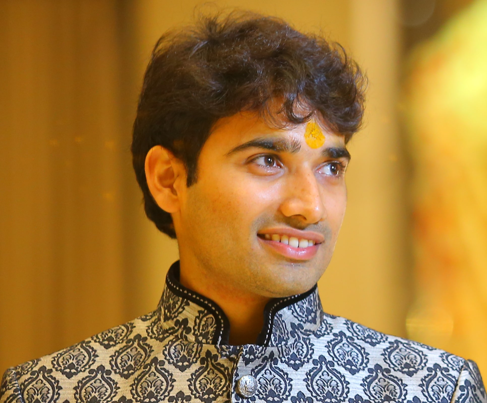

Raaz RSK Dwivedi
|  | FODSI Postdoctoral Fellow
Harvard contact: raaz@seas.harvard.edu, 2.339, SEC Harvard
SEAS
|
Short Bio
Research interests: High dimensional statistics, MCMC methods, causal inference, reinforcement learning
2021-current: FODSI Postdoctoral Fellow, Harvard & MIT joint with Prof. Susan Murphy and Prof. Devavrat Shah
2015-2021: Ph.D., EECS, University of California, Berkeley, advised jointly by Prof. Martin Wainwright and Prof. Bin Yu (thesis)
Summer 2019: Research internship, Microsoft Research New England, hosted by Lester Mackey
2014-2015: Senior Quantitative Researcher, WorldQuant Research Mumbai
Summer 2013: Research internship, EE, Stanford University, hosted by Prof. Balaji Prabhakar
2010-2014: B. Tech., EE, IIT Bombay with undergrad adviser Prof. Vivek Borkar (thesis)
News
Upcoming events!!
June 2, 2022: Presenting in the Synthetic Control Methods Workshop, 2022 at the Princeton University (5:30–6:30 PM ET)
June 9–10, 2022: Attending the Multi-disciplinary Conference on Reinforcement Learning and Decision Making (RLDM), 2022 at the Brown University
June 24, 2022: Speaking at the Causal Inference Reading Group at the University of Cambridge (1:30–2:30 PM GMT)
June 28, 2022: Chairing the New Researchers Group Session at the IMS Annual Meeting in London (4–5:30 PM GMT)
June 30, 2022: Speaking at & chairing the Statistical Machine Learning (IS 15) Session at the IMS Annual Meeting in London (1.30–3:30 PM GMT)
July 4, 2022: Speaking at the Symposium on Algorithmic Information Theory & Machine Learning at the Alan Turing Institute in London (2–2:30 PM GMT)
Aug 10, 2022: Speaking at the Joint Statistical Meeting (JSM) in Washington DC (10:30 AM ET, Session 427)
Mar 2022: IMS New Researchers Travel Award for the IMS Annual Meeting 2022, London
Jan 2022: Best Presentation Award for the talk on ‘‘Near-optimal Compression in Near-linear Time’’ at 27th Annual LIDS Student Conference, Machine Learning and Statistics Session at MIT
Jan 2022: Best Student Paper Award to joint work ‘‘Distribution compression in near-linear time’’ with Abhishek Shetty and Lester Mackey in Sections on Statistical Computing and Statistical Graphics by American Statistical Association (ASA); also accepted for presentation at ICLR 2022 and AABI 2022
Recent presentations
Counterfactual Inference in Sequential Experimental Design — video | slides | poster | preprint
American Causal Inference Conference (ACIC), Berkeley: Poster, May 2022
Symposium for Mathematical Sciences at Harvard (SMaSH): Poster, May 2022
MIT Statistics and Data Science Conference (SDSCon): Talk and poster, April 2022
MIT, Department of Economics: Econometrics Lunch, Mar 2022
MIT, LIDS, Department of EECS: LIDS & Stats Tea Talk, Mar 2022
Simons Institute, Berkeley: Invited talk in the workshop on Learning from interventions, Feb 2022
Harvard University, Department of Statistics: Talk at Stat 300, Feb 2022
FODSI Meetings: Invited talks at FODSI Retreat, Jan 2022, and Advisory Board Meeting Feb 2022
Near-optimal Compression in Near-linear Time — video | slides | COLT paper | ICLR paper | code
SIAM Conference on Uncertainty Quantification, Atlanta (Hybrid): Invited talk in Kernel methods for numerical integration, Apr 2022
MSRI, Berkeley: Invited talk in the workshop on Foundations of Stable, Generalizable and Transferable Statistical Learning, Mar 2022
LIDS Student Conference, MIT: Contributed talk in Machine Learning and Statistics Session, Jan 2022
(Generalized) Kernel Thinning — video | slides | poster | COLT paper | ICLR paper | code
International Conference on Learning Theory (ICLR): Contributed poster (virtual), Apr 2022
Advances in Approximate Bayesian Inference (AABI): Contributed poster (virtual), Feb 2022
Pointers for selected older talks
Revisiting Minimum Description Length Complexity in Overparameterized Models — video | slides | poster | preprint
Non-asymptotic Guarantees for High-Dimensional Sampling — slides | JMLR paper (MALA) | JMLR paper (HMC) | JMLR paper (Vaidya/John walks)
Stable Discovery of Interpretable Subgroups in Causal Studies — slides | poster | Int. Stat. Review paper
Detailed Bio
(Also see here for a bio in third person.)
Postdoc and Ph.D.: I am currently a FODSI postdoc fellow and fortunate to be advised by Prof. Susan Murphy in the Departments of Computer Science and Statistics at Harvard, and Prof. Devavrat Shah in the Laboratory of Information Decision and Systems (LIDS), Department of EECS at MIT. I finished my Ph.D. in Summer 2021 from the Department of EECS at the UC Berkeley where I was fortunate to be advised by Prof. Martin Wainwright and Prof. Bin Yu. My thesis committee members included Prof. David Aldous and Prof. Peter Bartlett. I was also fortunate to work with several collaborators, including Prof. Michael Jordan at UC Berkeley, Lester Mackey at Microsoft Research (MSR), and Prof. David Madigan at the Northeastern University (formerly at Columbia University). At Berkeley, I was associated with the Berkeley Laboratory for Information and System Sciences (BLISS), and the Berkeley Artificial Intelligence Research group (BAIR).
Research interests: My research interests include both the theoretical and applied aspects of statistical machine learning and data science. My recent works cover various topics in high-dimensional statistics with a focus on random sampling, improving sample quality. More recently, I have started thinking about problems at the intersection of reinforcement learning and causal inference.
Awards: My work on distribution compression won the best student paper award in ASA sections on statistical computing and statistical graphics. At UC Berkeley, I was awarded the Outstanding Graduate Student Instructor Award in 2020. I also received the prestigious Berkeley Fellowship, the highest award for the incoming graduate students, in 2015. During my graduation at IIT Bombay, I was awarded the President of India Gold Medal, the highest honor to a graduating batch of students, the Institute Silver Medal for the highest GPA, and the Best B. Tech Project Award in the EE department.
Work experience: I spent the summer of 2019 as a research intern at Microsoft Research New England. I also spent the summer of 2017 as an intern at Mist systems, Cupertino (later acquired by Juniper Networks). Before joining UC Berkeley, I worked for a year at WorldQuant Research in Mumbai, India, as a Senior Quantitative Researcher. During my undergrad, I spent the summer of 2013 at Stanford University as an intern with Prof. Balaji Prabhakar, and the winter of 2012 at Ivy Mobility.
Pre-Ph.D. life: Before UC Berkeley, I graduated from the Indian Institute of Technology, Bombay (IIT Bombay), with a B. Tech. (Honors) in Electrical Engineering and Minors in Mathematics. At IIT Bombay, I was also fortunate to work with Prof. Vivek Borkar, Prof. Pradeep Nair, and Prof. Juzer Vasi.
Fun Stat: Website visitor counts by country since Apr 3, 2022